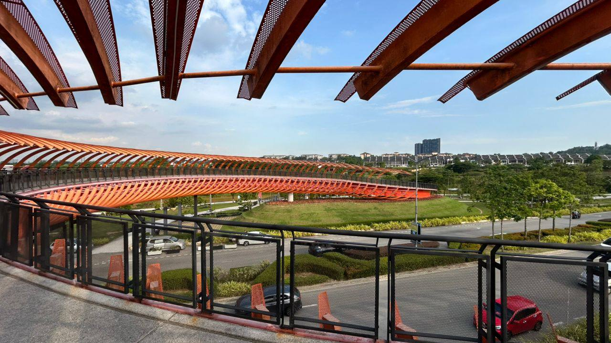
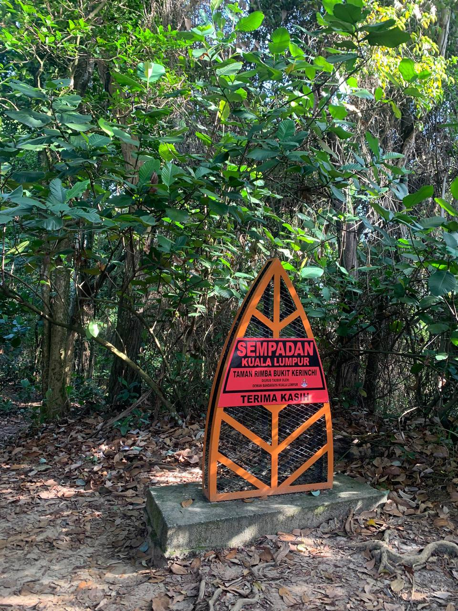
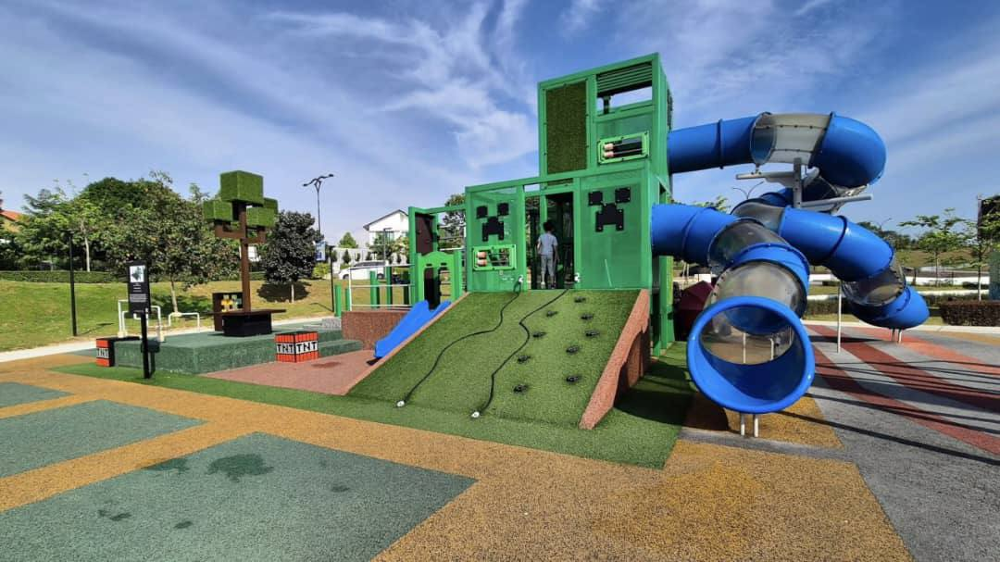

A public park with jogging, cycling and fitness facilities in Shah Alam, Selangor. Enjoy the view of the sky, river and pond, and the iconic red bridge at night.
ELMINA CENTRAL PARK
Taman Rimba Bukit Kerinchi is a popular destination for nature enthusiasts who enjoy hiking, picnicking, and camping.The area boasts several benches and rest areas where visitors can take a break and enjoy the scenic surroundings.

BUKIT KERINCHI FOREST PARK

This trail is great for running and walking, and it's unlikely you'll encounter many other people while exploring. The trail is open year-round and is beautiful to visit anytime.
TAMAN ALAM IMPIAN